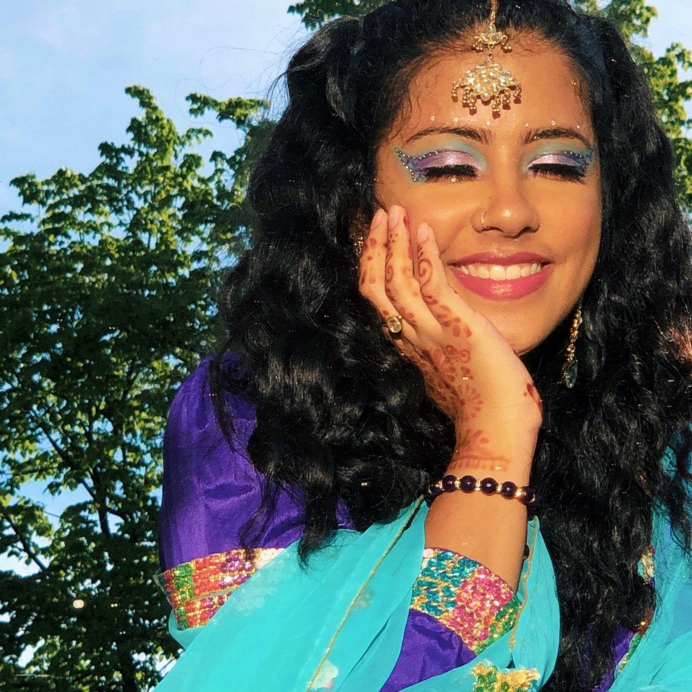

<!DOCTYPE html>

<html>
<head>
<style>
div {
  background-color: whitesmoke;
  width: 300px;
  padding: 50px;
  margin: 20px;
}
</style>
</head>
<body>


</body>
</html>

<html>
  <head>
    <meta charset="UTF-8">
    <title>Tayyaba's Portfolio</title>
    <link rel="stylesheet" href="style.css">
    <script src="script.js"></script>
  </head>
  <body>
    <div id="content">
      <h1>Tayyaba's Portfolio</h1>
      <p>Hi! My name is Tayyaba and welcome to my page! I am a undergraduate student at Cornell University, Class of 2022. I am majoring in Computer Science and Asian Studies.
          A lot of people ask my why I chose those two majors since they appear to be very different. Truthfully, I enjoy STEM and Humanities a lot, and believe that
          they are equally as important. In Asian Studies, I mostly focus on Japan and South Asia, and am currently studying Japanese. I was supposed to study abroad in 
          Japan, Fall 2020, but due to recent events that has been postponed to Spring 2021, fingers crossed! If you'd like to learn more about some of my projects or my 
          previous experiences, please check out my <a href="https://www.linkedin.com/in/tayyabaali/">LinkedIn</a> and 
          <a href="https://github.com/tayyaba17/">GitHub</a>.</p>

      <p>A little more about me is that I really enjoy expressing my creative side in many ways, from graphic deisgn to trying out new makeup looks! I am also a big animal lover,
             growing up I always wanted a cat, but after my parents' constant refusal, I ended up getting guinea pigs. I have three guinea pigs right now (at one point I had five), 
             and they are the sweetest.
             I used to read a lot when I was younger so that is something that I am trying to get back into, I'm always looking for reccomendations so if you have any, please any let me know!</p>

      <p>Press the button to learn a random fact about me:</p>
      <button onclick="addRandomFact()">Facts</button>
      <div id="fact-container"></div>

      <h1>Photo Gallery</h1>
      <p>I'd love to share some photos with you all.</p>

      <h1>Makeup Gallery</h1>
      
      
      
      
      
      
      
      

      <h1>Guinea Pig Gallery</h1>
      
      
      
      
      
      

      <h1>Favorite Animal Crossing Characters</h1>
      

      


      
    </div>
  </body>
</html>


